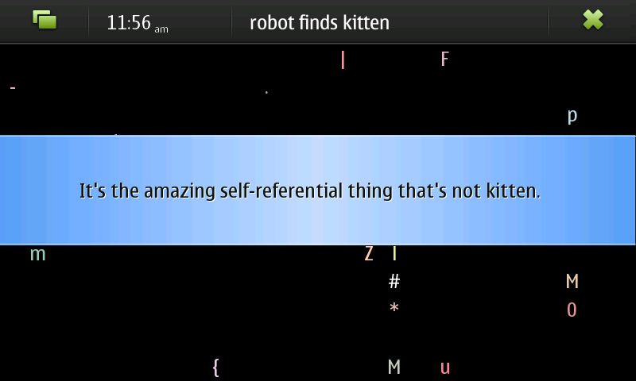

robotfindskitten for Maemo 5
For background information
robotfindskitten.org
Wikipedia.
Things to do
Read the source.
Install it.
Visit the project page on maemo.org.
People responsible
rfk is by
Leonard Richardson
.
This Maemo port is by
Thomas Thurman
.